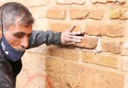

Masonry
Stone conservation is the core of our field capability. Our teams execute cleaning, consolidation, repointing with compatible lime-based mortars, structural stabilisation, anastylosis and limited reconstruction. Work is preceded by an approved method statement and an on-site sample panel signed off before full execution.
Delivered 2,993 m² stone and repointing across 11 buildings at Ma’an; 1,500 m² stone façade restoration at Aqaba; consolidation and anastylosis at Qasr Al-Mshatta; stone seating and retaining walls at Beit Ras.